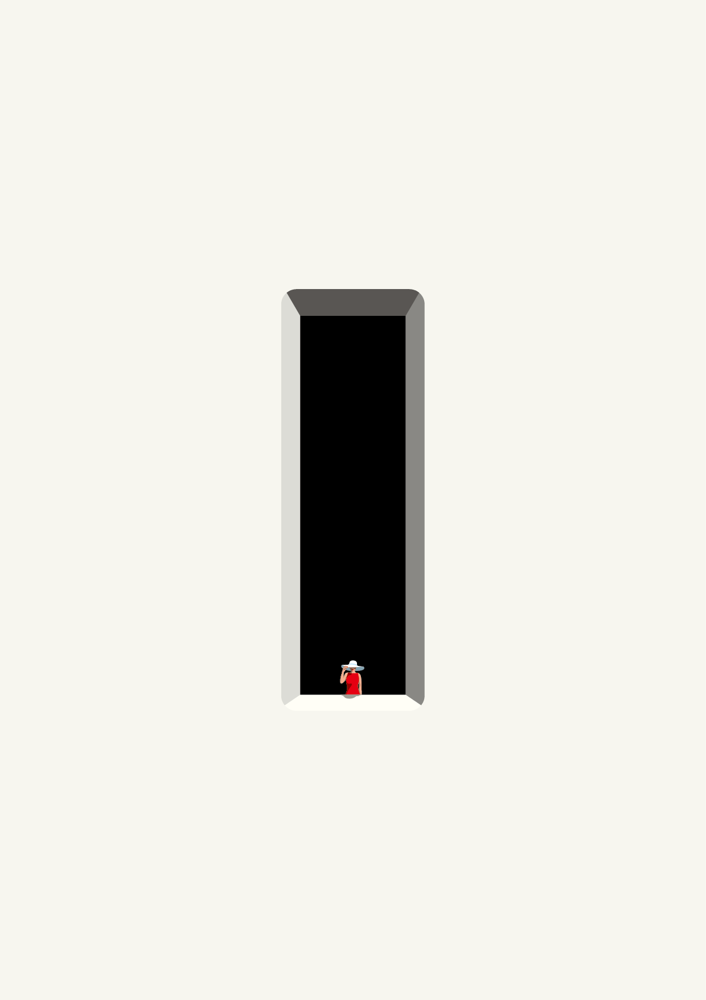
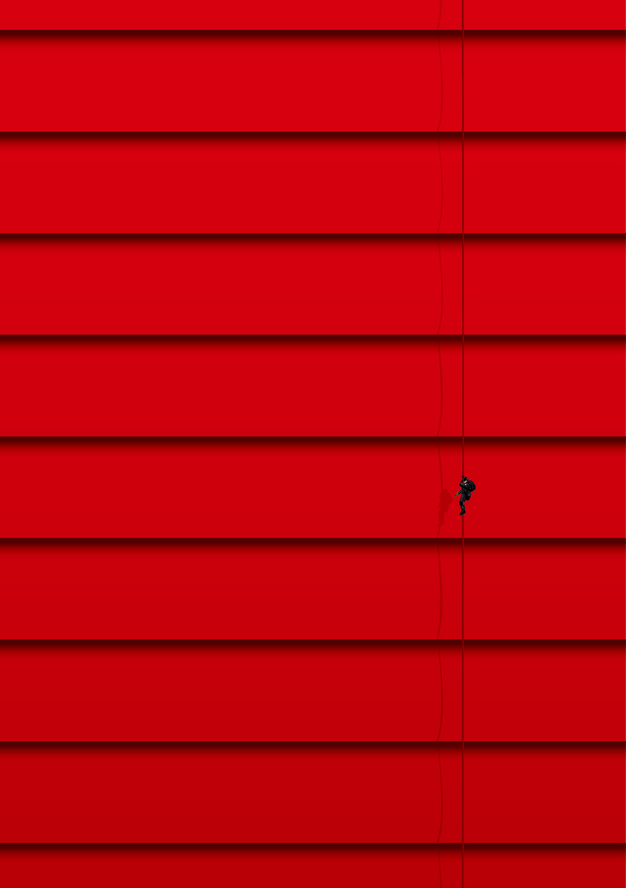
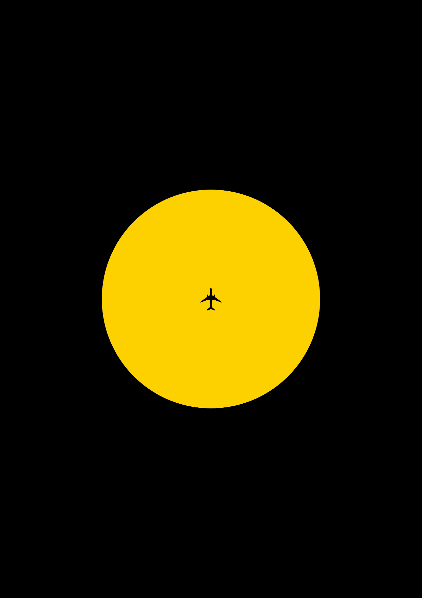
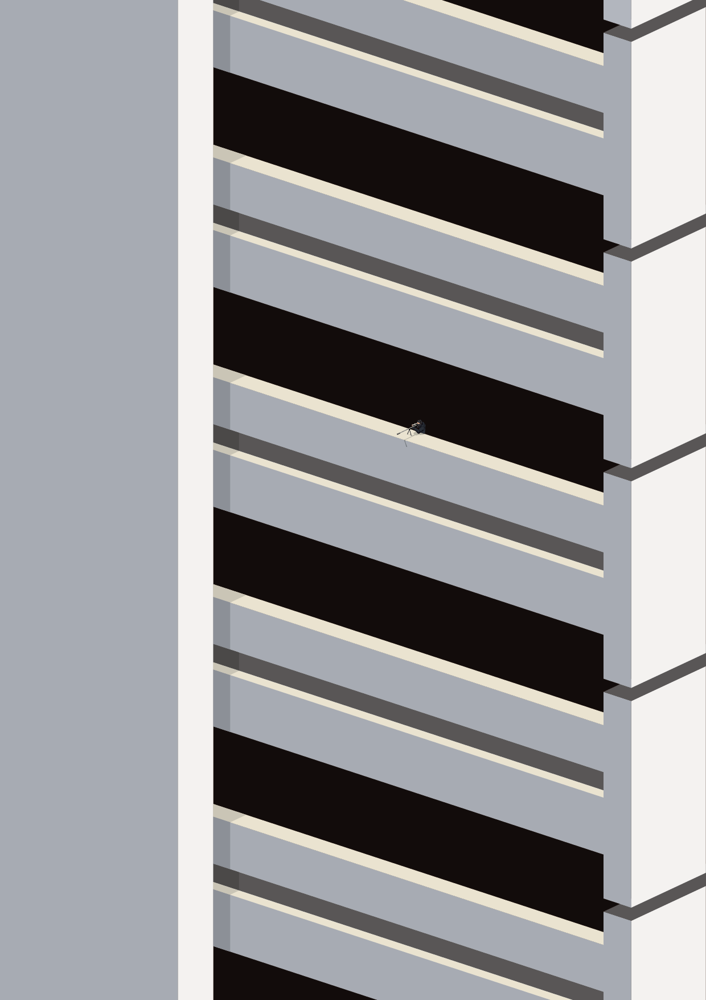
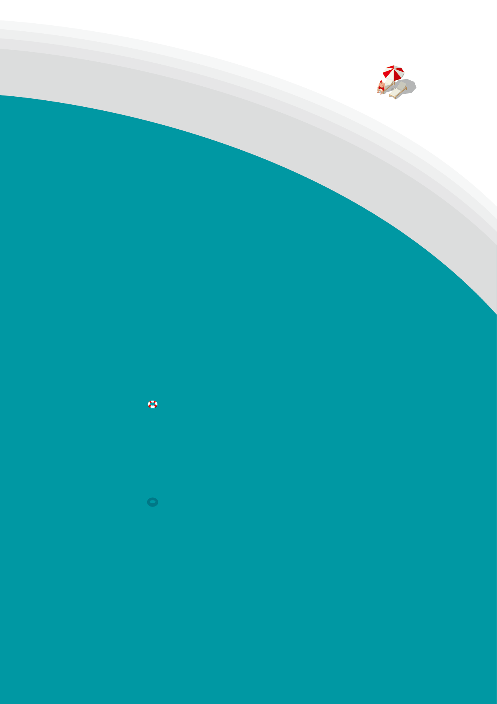
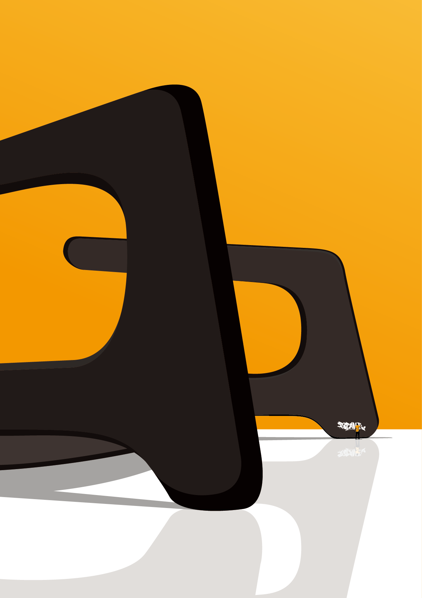
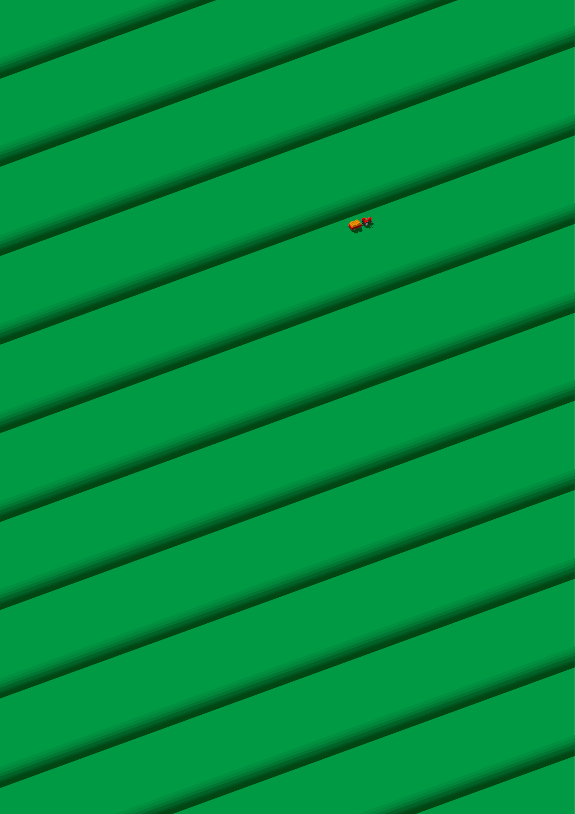
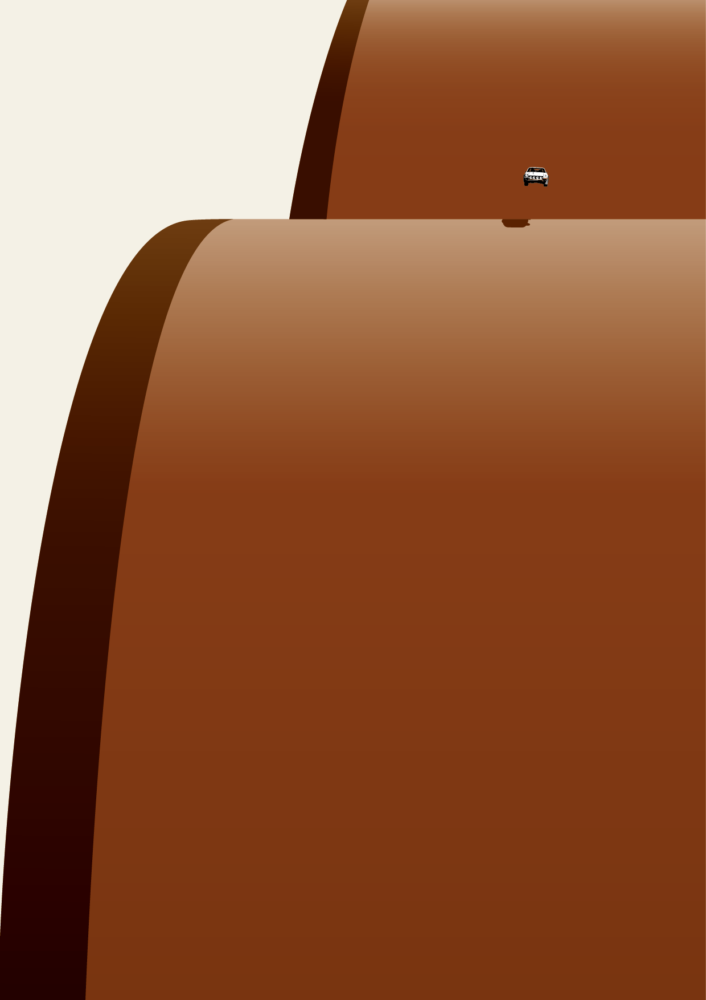
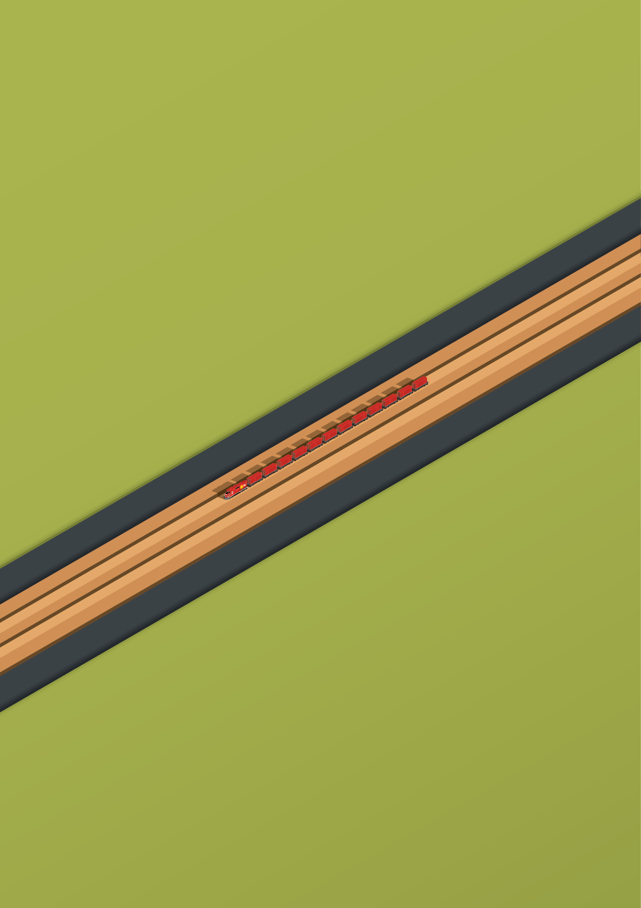
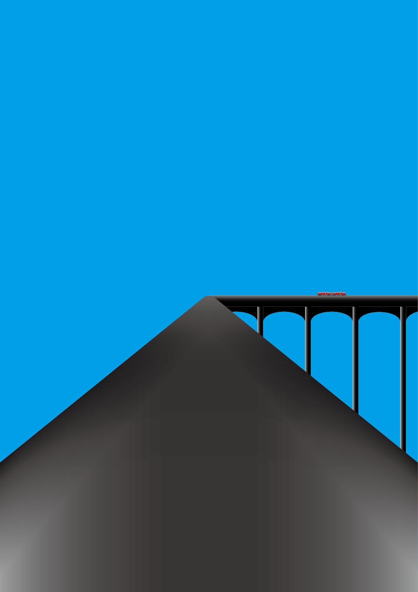

CONCEPT
普段目にしている何の変哲もない場所を、
いつもと違った視点で見てください。
きっと、そこには不思議な発見や閃きが潜んでいるかも。
私は大学4年間で視点を変えること、言い換えると相手の立場に立つことは、
デザインを学んでいても普段の生活でも、とても大切なことだと感じました。
学生最後の制作となる今回の作品では、
日常に潜む小さな閃きををビジュアル化することにより、
「視点を変える」ことの面白さ、大切さについて考える機会となれば幸いです。
私の作品を見て、1つでも多くの発見や閃きが生まれますように。
|  |  |
| No.01 | No.02 |
|  |  |
| No.03 | No.04 |
|  |  |
| No.05 | No.06 |
|  |  |
| No.07 | No.08 |
|  |  |
| No.09 | No.10 |